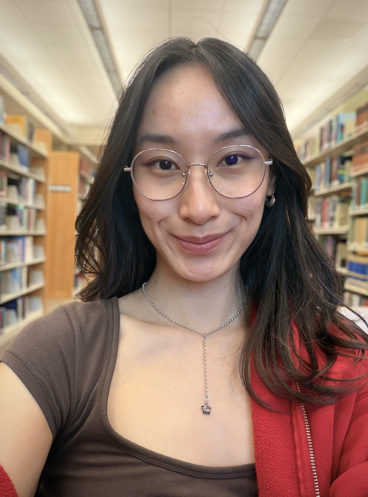
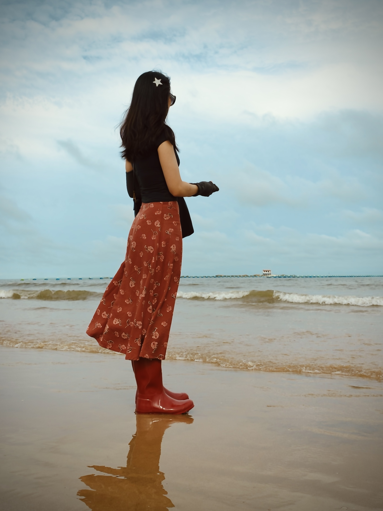

Asian Diasporic Women Study
Principal Investigator · Oberlin · 2026–psychology · art history · multicultural care
Making room for every story
I’m a senior at Oberlin College studying Psychology and Art History, with a minor in Feminist Studies. I grew up in Shanghai, then Spain, then suburban Georgia. Whenever I was lost amidst the cultures, I would soon find myself again under others’ helpful wings. That supportive community is what inspired me to advocate for others, and to help improve the systems we all live within.
I’m working toward a career in clinical mental health counseling. I hope to work with people of all ages, with a focus on older adults, neurodivergent individuals, and culturally diverse communities. I believe that when people rework their own stories, filled with dense darkness and startling light, and come to see them through a lens of care and compassion, those stories go on to change the people around them and to shape our collective narrative.

Asian Diasporic Women Study
Principal Investigator · Oberlin · 2026–Verosky Face Perception Lab
Research Assistant · Oberlin · 2026–Magro Lab
Research Volunteer · Oberlin · 2026–Kendal at Oberlin
Clinical Intern · Oberlin · starting Nov 2026Jiapei Aiwo Rehabilitation Clinic
Clinical Rehabilitation Intern · Shanghai · 2026Gentiva Hospice
Hospice Volunteer · Atlanta · 2025IntergenConnect
Intergenerational Planning Team · Oberlin · 2026–Shanghai Disabled Persons Employment Service Center
Vocational Support Volunteer · Shanghai · 2026Oberlin Elementary After-School
Group Leader · Oberlin · 2025–26Resident Assistant
Residential Life · Oberlin · 2026–Allen Memorial Art Museum
Gallery Guide · Oberlin · 2026–Wilder Voice Magazine
Layout Editor · Oberlin · 2024–
I’m deeply committed to multicultural care and community building. Navigating the U.S. in contemporary times, I’ve come to understand the power of collecting multicultural memories. I’ve also seen the spheres of bonding that form when diverse groups come together through what they’ve shared. I hope to contribute to this growing momentum of coming together: finding our similarities, and finding meaning in our differences.
As a budding mental health practitioner, I’ve come to see each person as located within constellations: of systemic and interpersonal power, of their own strengths and struggles, and of the strengths and struggles of the communities around them. My mission is to help people envision the whole cosmology of their lives. I also believe advocacy and activism can powerfully start with grassroots narratives in one-on-one relationships, which then ripple out to communities, and to more communities. Through my training as a therapist, and hopefully one day as a counseling psychologist, I hope to carry what I learn into systemic change.
Growing up across three countries has shaped the curiosity I bring to my own life. Though I’m a bit of a creature of habit, I’m always eager to explore the boundless world around me. I’m a native speaker of Mandarin and English, I speak Spanish at an advanced level, and I’m avidly learning Shanghainese and French. Outside of psychology, I love anything cozy and anything old. I paint lots of watercolors and want to get into film photography. One thing that always makes me happy is tea and a midnight walk.